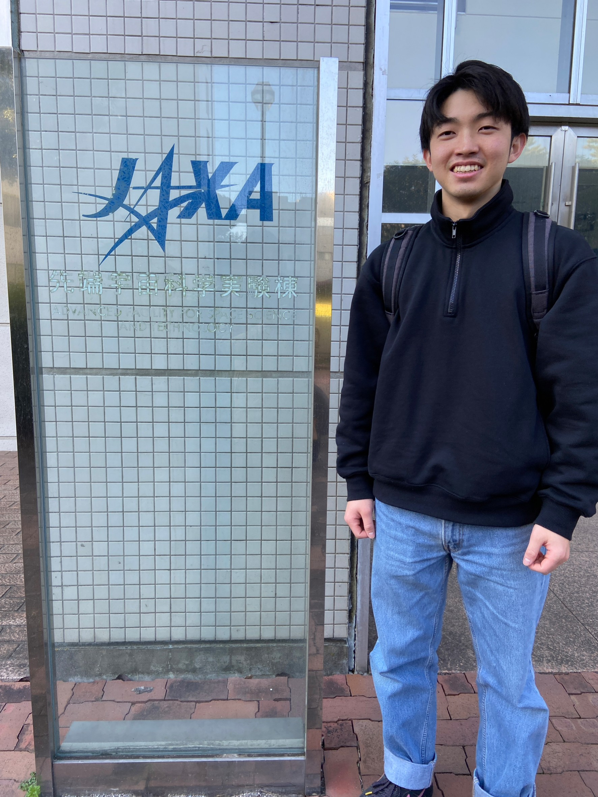

Aug 2022 - Current
KOSEN-3 CubeSat Launch Project
JAXAのロケットで2026年打ち上げ予定の超小型衛星に搭載するパルスプラズマスラスタの開発に従事。磁気ノズルによる推力向上を研究し、測定データをPythonで解析。React+TypeScriptでスライドバー付きのインタラクティブな発表資料も開発。国際学会で発表、論文5本。
Space PropulsionPythonReactTypeScriptJAXA